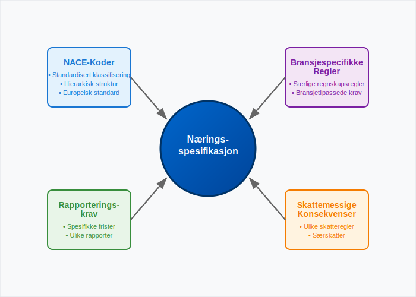
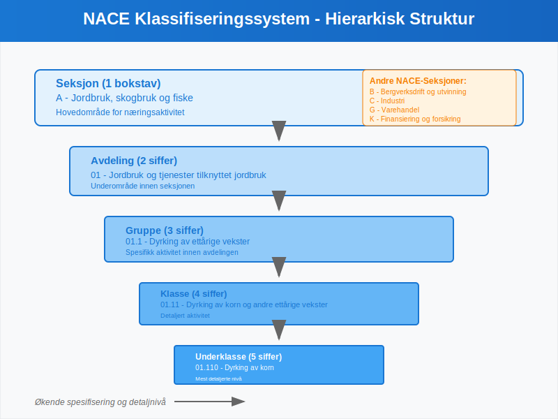
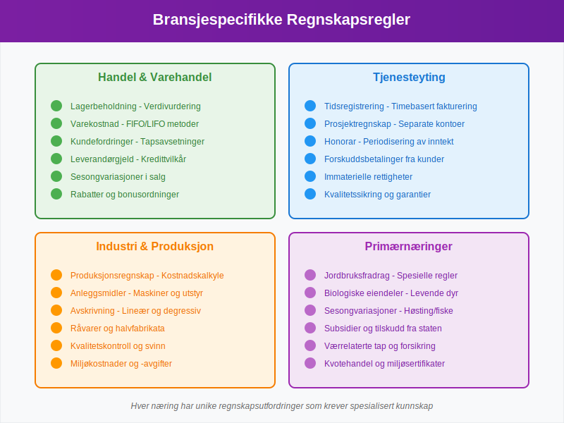
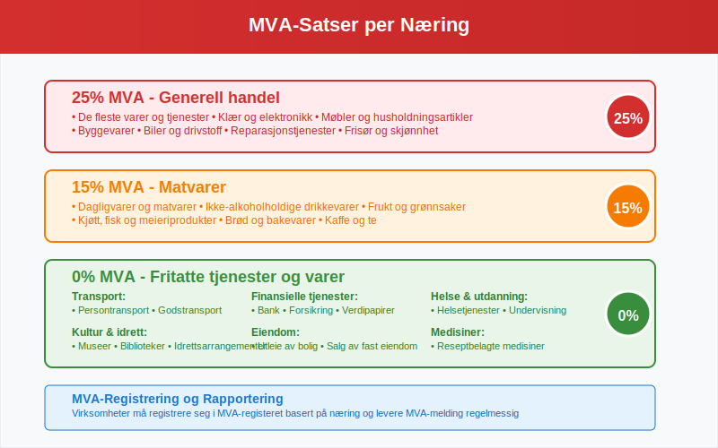
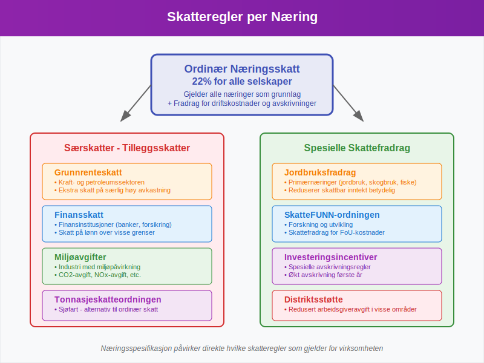
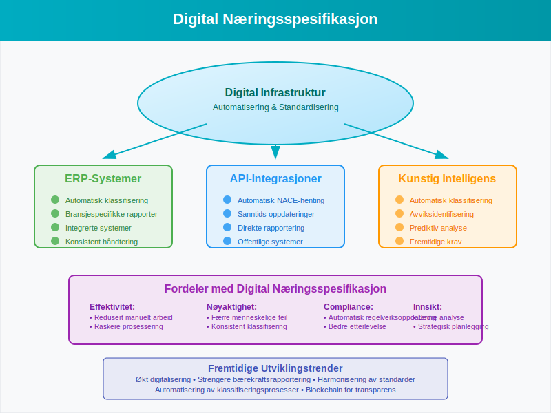

Næringsspesifikasjon er et fundamentalt konsept i norsk regnskap som omfatter den systematiske klassifiseringen og spesifiseringen av virksomheters næringsaktiviteter. Dette er avgjørende for korrekt rapportering, skatteberegning og overholdelse av bransjespecifikke regnskapsregler.
For virksomheter som driver med detaljhandel eller engroshandel, er korrekt næringsspesifikasjon særlig viktig for å sikre riktig bokføring og rapportering.
Grunnleggende om Næringsspesifikasjon
Næringsspesifikasjon handler om å identifisere, klassifisere og dokumentere de spesifikke aktivitetene en virksomhet driver med. Dette påvirker alt fra kontoplan til skatteberegning og rapporteringskrav.

Hovedkomponenter i Næringsspesifikasjon
- NACE-koder - Standardisert næringsklassifisering
- Bransjespecifikke regnskapsregler - Særlige krav for ulike næringer
- Rapporteringskrav - Spesifikke rapporter og frister
- Skattemessige konsekvenser - Ulike skatteregler per næring
NACE-Koder og Næringsklassifisering
NACE (Nomenclature statistique des Activités économiques dans la Communauté Européenne) er det europeiske systemet for næringsklassifisering som også brukes i Norge. Hver virksomhet må registrere sin hovedaktivitet og eventuelle biaktiviteter.

Struktur av NACE-Koder
NACE-systemet er hierarkisk oppbygget med følgende nivåer:
| Nivå | Beskrivelse | Eksempel | Antall siffer |
|---|---|---|---|
| Seksjon | Hovedområde | A - Jordbruk, skogbruk og fiske | 1 bokstav |
| Avdeling | Underområde | 01 - Jordbruk og tjenester tilknyttet jordbruk | 2 siffer |
| Gruppe | Spesifikk aktivitet | 01.1 - Dyrking av ettårige vekster | 3 siffer |
| Klasse | Detaljert aktivitet | 01.11 - Dyrking av korn og andre ettårige vekster | 4 siffer |
| Underklasse | Mest detaljerte nivå | 01.110 - Dyrking av korn | 5 siffer |
Viktige NACE-Seksjoner for Norske Virksomheter
- A - Jordbruk, skogbruk og fiske
- B - Bergverksdrift og utvinning
- C - Industri
- F - Bygge- og anleggsvirksomhet
- G - Varehandel; reparasjon av motorvogner
- H - Transport og lagring
- I - Overnattings- og serveringsvirksomhet
- J - Informasjon og kommunikasjon
- K - Finansierings- og forsikringsvirksomhet
- L - Omsetning og drift av fast eiendom
- M - Faglig, vitenskapelig og teknisk tjenesteyting
Bransjespecifikke Regnskapsregler
Ulike næringer har spesifikke regnskapsregler som må følges. Dette påvirker hvordan inntekter og kostnader skal registreres.

Handel og Varehandel
For virksomheter innen handel gjelder spesielle regler for:
- Lagerbeholdning - Verdivurdering og registrering
- Varekostnad - Beregning av solgte varers kost
- Kundefordringer - Håndtering av utestående beløp
- Leverandørgjeld - Registrering av kjøp på kreditt
Tjenesteyting
Tjenestevirksomheter har egne utfordringer:
- Tidsregistrering - Dokumentasjon av arbeidstimer
- Prosjektregnskap - Separate regnskaper per prosjekt
- Honorar - Registrering av konsulentinntekter
- Forskuddsbetalinger - Håndtering av forskuddsbetaling
Industri og Produksjon
Industrivirksomheter må håndtere:
- Produksjonsregnskap - Kostnadskalkyle for produksjon
- Anleggsmidler - Maskiner og utstyr
- Avskrivning - Systematisk nedskrivning av eiendeler
- Råvarer og halvfabrikata - Spesiell lagerhåndtering
Primærnæringer
For jordbruk, skogbruk og fiske gjelder:
- Jordbruksfradrag - Spesielle skattefradrag
- Biologiske eiendeler - Levende dyr og planter
- Sesongvariasjoner - Håndtering av sesongbaserte inntekter
- Subsidier og tilskudd - Offentlig støtte
MVA og Næringsspesifikasjon
Merverdiavgift (MVA) varierer betydelig mellom ulike næringer. Korrekt næringsspesifikasjon er avgjørende for riktig MVA-behandling.

MVA-Satser per Næring
| Næring | MVA-Sats | Eksempler |
|---|---|---|
| Generell handel | 25% | De fleste varer og tjenester |
| Matvarer | 15% | Dagligvarer, ikke-alkoholholdige drikkevarer |
| Transport | 0% | Persontransport, gods |
| Finansielle tjenester | 0% | Bank, forsikring, verdipapirer |
| Helse og utdanning | 0% | Offentlige og private helsetjenester |
| Kultur og idrett | 0% | Museer, biblioteker, idrettsarrangementer |
MVA-Registrering og Rapportering
Virksomheter må:
- Registrere seg i MVA-registeret basert på næring
- Levere MVA-melding regelmessig
- Dokumentere alle MVA-beregninger
- Følge bransjespecifikke MVA-regler
Rapporteringskrav per Næring
Ulike næringer har forskjellige rapporteringskrav til offentlige myndigheter. Dette påvirker både hyppighet og innhold i rapporteringen.
Månedlig Rapportering
Følgende næringer må ofte rapportere månedlig:
- Detaljhandel - Datakasse og salgsrapporter
- Serveringssteder - Omsetningsrapporter
- Transport - Kjørebøker og fraktdokumenter
Kvartalsvis Rapportering
- Kvartalsrapporter for større virksomheter
- MVA-meldinger for de fleste virksomheter
- Lønnsrapportering gjennom A-meldingen
Årlig Rapportering
Alle virksomheter må levere:
- Årsregnskap til Regnskapsregisteret
- Selvangivelse til Skatteetaten
- Årsrapport for større selskaper
Skattemessige Konsekvenser
Næringsspesifikasjon påvirker direkte hvilke skatteregler som gjelder for virksomheten. Dette inkluderer både ordinær skatt og eventuelle særskatter.

Ordinær Næringsskatt
Alle næringer er underlagt:
- Ordinær skattesats på 22% for selskaper
- Fradrag for driftskostnader
- Avskrivningsregler for anleggsmidler
Særskatter per Næring
Enkelte næringer har tilleggsskatter:
- Grunnrenteskatt - Kraft- og petroleumssektoren
- Finansskatt - Finansinstitusjoner
- Miljøavgifter - Industri med miljøpåvirkning
Skattefradrag per Næring
Spesielle fradrag for:
- Jordbruk - Jordbruksfradrag
- Forskning og utvikling - SkatteFUNN-ordningen
- Sjøfart - Tonnasjeskatteordningen
Praktisk Implementering
For å implementere korrekt næringsspesifikasjon i regnskapet, må virksomheter følge en systematisk tilnærming.
Trinn 1: Identifiser Hovedaktivitet
- Analyser virksomhetens inntektskilder
- Bestem hvilken aktivitet som genererer mest inntekt
- Velg riktig NACE-kode for hovedaktiviteten
Trinn 2: Registrer Biaktiviteter
- Identifiser alle andre aktiviteter
- Vurder om de krever separate NACE-koder
- Dokumenter fordelingen av inntekter
Trinn 3: Tilpass Kontoplanen
Kontoplanen må tilpasses næringens behov:
- Legg til bransjespecifikke kontoer
- Strukturer kontoer etter aktivitetsområder
- Sikre korrekt kontering
Trinn 4: Etabler Rutiner
- Opprett rutiner for bransjespecifikk dokumentasjon
- Implementer kontroller for korrekt klassifisering
- Tren personalet i næringsspesifikke krav
Digitalisering og Næringsspesifikasjon
Moderne teknologi gjør næringsspesifikasjon mer effektiv gjennom automatisering og standardisering.

ERP-Systemer
ERP-systemer kan:
- Automatisk klassifisere transaksjoner basert på næring
- Generere bransjespecifikke rapporter
- Integrere med offentlige rapporteringssystemer
- Sikre konsistent håndtering av næringsspesifikke regler
API-Integrasjoner
API-integrasjoner muliggjør:
- Automatisk henting av NACE-koder fra Brønnøysundregistrene
- Sanntids oppdatering av bransjespecifikke regler
- Direkte rapportering til offentlige systemer
Kunstig Intelligens
AI kan bidra til:
- Automatisk klassifisering av transaksjoner
- Identifisering av avvik fra bransjenormer
- Prediksjon av fremtidige rapporteringskrav
Utfordringer og Løsninger
Næringsspesifikasjon bringer med seg flere utfordringer som virksomheter må håndtere.
Vanlige Utfordringer
- Komplekse bransjespecifikke regler
- Hyppige endringer i regelverk
- Mangel på bransjeekspertise
- Integrasjon mellom ulike systemer
Anbefalte Løsninger
- Invester i bransjespecifikk kompetanse
- Implementer robuste kontrollsystemer
- Hold deg oppdatert på regelverksendringer
- Bruk spesialiserte regnskapssystemer
Fremtidige Utviklingstrender
Næringsspesifikasjon vil fortsette å utvikle seg med nye teknologier og endrede krav.
Kommende Endringer
- Økt digitalisering av rapporteringsprosesser
- Strengere bærekraftsrapportering
- Harmonisering av europeiske standarder
- Automatisering av klassifiseringsprosesser
Forberedelser for Fremtiden
Virksomheter bør:
- Investere i fleksible systemer
- Bygge digital kompetanse
- Etablere partnerskaper med teknologileverandører
- Følge internasjonale utviklingstrender
Konklusjon
Næringsspesifikasjon er et komplekst, men kritisk område innen norsk regnskap. Korrekt implementering krever:
- Grundig forståelse av NACE-klassifiseringssystemet
- Kunnskap om bransjespecifikke regnskapsregler
- Systematisk tilnærming til implementering
- Kontinuerlig oppdatering av kunnskap og systemer
For virksomheter som ønsker å sikre korrekt regnskapsføring og rapportering, er det essensielt å investere i riktig kompetanse og systemer for håndtering av næringsspesifikasjon. Dette vil ikke bare sikre regelverksetterlevelse, men også gi verdifull innsikt i virksomhetens økonomiske ytelse sammenlignet med bransjenormer.
Ved å følge prinsippene og anbefalingene i denne artikkelen, kan virksomheter etablere et solid fundament for næringsspesifikk regnskapsføring som støtter både daglig drift og langsiktig strategisk planlegging.